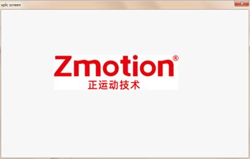
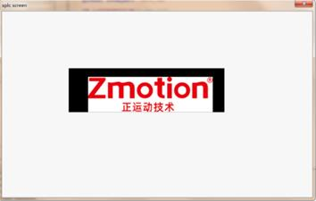

|
类型 |
锁存处理 |
|
描述 |
对当前显示图像进行比例缩放和x，y坐标的平移。 流程：在当前图像基础上缩放sclaeFactor，缩放时屏幕中心点对应的图像坐标位置不变，在缩放后的图像上再平移tx和ty像素，平移时最多能将图像边界平移到视野中心，如向右下平移时最多能将图像左上角点平移到视野中心。锁存变换需要正确设置锁存大小（控件尺寸），变换后图像与窗体大小一致，像素一一对应
注意：因显示方式限制，显示指令不能频繁连续调用，否则可能导致后一条指令丢失，即指令触发保护机制而不更新显示直接返回 显示指令包括ZV_LATCH、ZV_LATCHTRANS、ZV_LATCHCLEAR |
|
语法 |
ZV_LATCHTRANS(latchId,sclaeFactor,tx,ty)
参数： latchId：锁存通道号 sclaeFactor：前基础上的缩放比例，比例可以为0则按窗体尺寸缩放显示 tx：基础上的x方向平移像素数，大于0为x正方向移动，尺寸计数基于缩放后图像（与控件坐标系一一对应） ty：基础上的y方向平移像素数，大于0为y正方向移动，尺寸计数基于缩放后图像（与控件坐标系一一对应） |
|
适用控制器 |
支持ZV功能或者5系列以上的控制器 |
|
例子 |
例如：   原图像 变换后 （缩小0.8倍，向x方向平移10像素，向y方向平移10像素）
ZVOBJECT img ZV_LATCHSETSIZE(0,553,155) '显示区域的大小 ZV_ImgRead(img,"logo.png",0) '以原图像格式读取图像 ZV_LATCH(img,0)
'按钮动作 ZV_LATCHTRANS(0,0.8,10,10) '在显示图像基础上以图像中心缩小0.8倍，在x、y轴正方向（右下）再平移相当于控件10像素的距离 |